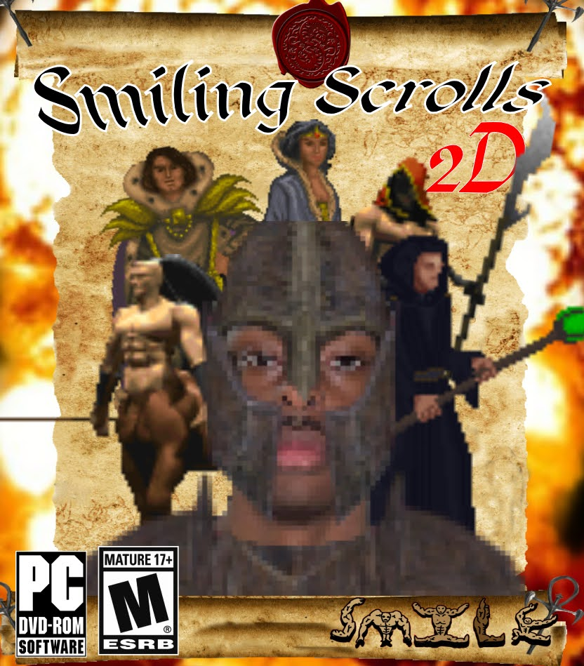
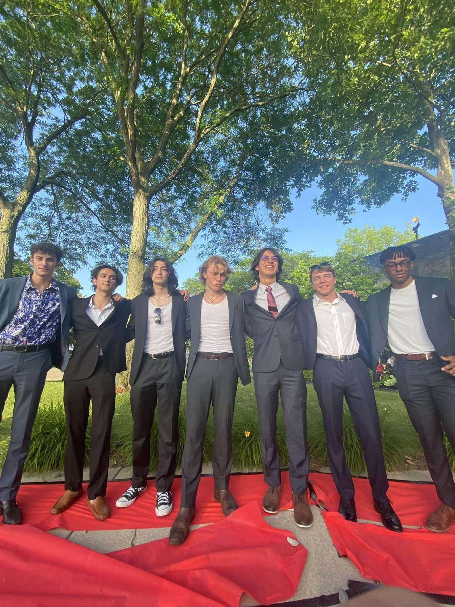
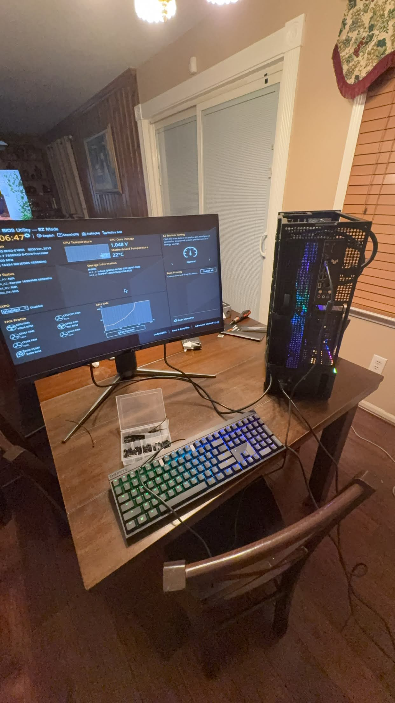

Resume Highlights
- All
- Projects
- Leadership
- AI

Web Design & UX Project
GitHub Pages project focused on layout, branding, and responsive design.

PepsiCo Case Competition
Presented a team pitch that combined business analysis and recommendations.

Impact89FM Leadership
Supports daily operations, hiring, budgeting, and systems work for 70+ staff and 200+ volunteers.

Handshake AI Work
Contributed to LLM training, evaluation, and prompt refinement.